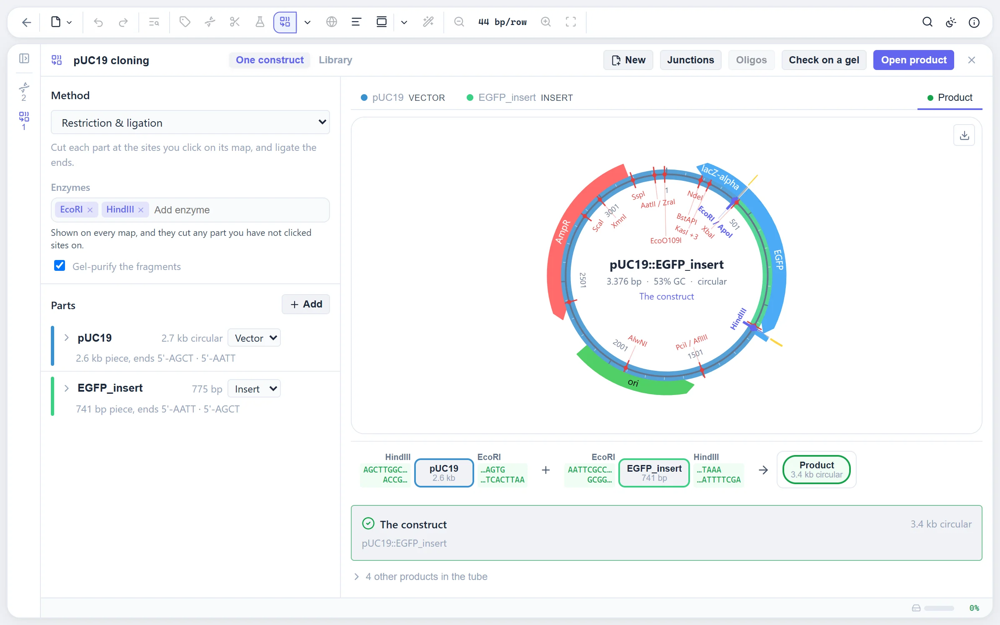

Who this is for
SnapGene is good software, and if your lab has licences and everyone is happy, there is no reason to read on. People come looking for an alternative for a few recurring reasons: a licence that ran out or was never there (a student, a teaching lab, a small company, a collaborator in another institute), a shared or locked-down machine where nothing can be installed, a requirement for open-source tools, or a workflow that reaches past plasmid design into Sanger assembly, NGS mapping or CRISPR editing and needs a second or third program. SeqNexus is built for those cases.
Your SnapGene files open as they are
Drag a .dna file onto the editor and it opens with its features, their colours and directions, its primers, its topology and its notes. The parser was written for this project and has tests of its own. Collections of files open together, so a folder of constructs becomes a folder in the explorer, with tags, search and grouping.
Files go back out as SnapGene .dna too, as well as GenBank, so a colleague who stays on SnapGene can open what you made. Geneious files and whole Geneious folder exports open the same way.
What you would use it for
| Task | In SeqNexus |
|---|---|
| Plasmid maps | Features, cut sites, primers and GC on rings, two layouts, four styles, names that never cross, and SVG, PNG and PDF export that matches the screen. How the map is drawn → |
| Restriction cloning | Each part on its own map; click the sites to cut, and the reaction strip shows what goes into the ligation. Compatible ends are checked and methylation-blocked sites are marked. |
| Gibson, HiFi, In-Fusion, SLIC | Seamless assembly with the primers and homology arms designed for every part that needs them. |
| Golden Gate, Gateway, TOPO | Golden Gate with overhang fidelity, Gateway BP and LR, and TOPO, on the same path as restriction cloning. Several parts per slot give a combinatorial library. |
| Primers | PCR, qPCR with a probe, cloning tails, mutagenesis and sequencing primers, with nearest-neighbour Tm, hairpin and dimer grades and a primer library. How primers are designed → |
| Restriction analysis and gels | The REBASE enzyme set with overhangs, methylation and suppliers, sets of the enzymes you own, and a virtual agarose gel with a diagnostic digest designer. |
| Codon optimization | Nineteen genetic codes and host usage tables, with restriction sites, homopolymers, repeats and GC extremes avoided while the protein stays as it was. |
| CRISPR | Guides for a dozen nucleases, scored, with off-target search, donors that will not be re-cut, base and prime editing, the oligos to order and the edit read back from a chromatogram. |
| Alignment and BLAST | Pairwise and multiple alignment with MAFFT, MUSCLE and Kalign in an editable viewer, and BLAST searches kept with the sequence. |
| Sanger sequencing | AB1 and SCF traces, trimming, assembly into contigs, and a whole plate of clones verified against several references at once. |
| NGS | FASTQ read sets with a FastQC-style report, trimming with fastp, mapping with minimap2, variant calling with coding effects, and BAM in and out, all in the browser. Not something a plasmid editor usually does. |
| Proteins | Protein sequences with mass, pI, extinction coefficient, domains, proteolysis, a predicted SDS-PAGE band and the 3D structure from the PDB or AlphaFold. |
| Figures | Every view exports as SVG or PDF in a print palette, with text kept as text for Illustrator or Inkscape. |

Where the two differ
The differences are in how the programs are built and paid for, not only in their feature lists.
- Price and licence. SnapGene is commercial software sold under paid licences; its free viewer is for viewing and annotating, not for designing. SeqNexus is free for everyone, academic and commercial, with nothing to unlock, and it is open source under the GNU AGPL v3, so you can read how every number is computed and fix what is wrong.
- Where it runs. SnapGene is a desktop program you install. SeqNexus is a web page: open it in any modern browser on any operating system, and it keeps working offline once loaded. There is nothing to install and nothing to update.
- Where your data lives. Both keep your sequences on your own machine. SeqNexus stores them in the browser's own database, and nothing you open is sent anywhere, since there is no server to send it to. The only network requests are the ones you ask for: fetching a record from NCBI or UniProt, or a BLAST search.
- Where it reaches. SeqNexus goes further into the data that comes back from the sequencer: Sanger clone verification by the plate, FASTQ quality control, read mapping and variant calling, and CRISPR edit read-back. These usually take other programs.
- Maturity. SnapGene has been in labs for well over a decade. SeqNexus is new. Its algorithms are checked against reference implementations (Biopython for enzymes and Tm, ENA's own validator, GenomeTools and Picard for exports, independent implementations of the published models for CRISPR scoring), and the README says what each tool does and what it leaves out. But you will find rough edges, and reports are welcome.
- Collaboration. SeqNexus has no shared server or team workspace. Sequences are shared as files: a .dna or GenBank export, or a session file holding everything in the explorer.
Moving over
- Open the editor and drag your .dna files, or a folder of them, onto the window. They open with their features, primers and notes.
- Open your primer list the same way: a CSV or TSV with name and sequence columns, or a FASTA. The primers are found on every sequence they bind.
- Keep working. The map, the cloning workspace and the primer workbench are where you would expect them, and the command palette finds anything else by name.
- Share back as .dna or GenBank for colleagues who stay on SnapGene, or as a session file for someone else on SeqNexus.
Other alternatives
SeqNexus is not the only option, and the right one depends on what you need. ApE (A plasmid Editor) is a free desktop program that many labs use for plasmid maps and restriction analysis. Benchling is a web platform with a free academic tier that keeps your sequences in an account on its servers, which some labs want and some cannot allow. Geneious Prime is a commercial desktop suite with a wide range of analysis tools, whose files SeqNexus also reads. The free SnapGene Viewer lets you open and annotate .dna files without a licence. If you need a free tool that simulates cloning, designs primers and keeps your data on your own machine, SeqNexus is built for exactly that.
Questions people ask
Is it really free, also for a company?
Yes. There is no trial, no tier and no fee for commercial use. Figures and files you make are yours for publications, theses, talks and products; if they end up in a paper, please cite the tool (the reference is in the footer). The software is licensed under the AGPL v3, which concerns the source code of the program, not what you make with it.
Does it upload my sequences?
No. There is no server. The page you open is the whole program, and every alignment, digest and mapping is computed in your browser. Sequences are stored in the browser's own database on your device.
Does it open .dna files from SnapGene?
Yes, with features, primers, topology and notes, and it writes them too. GenBank, FASTA, Geneious, EMBL, GFF3, AB1, SCF, FASTQ, SAM and BAM are read as well. See the full list.
Does it work offline?
Once the editor page has loaded it keeps working without a connection, and your sequences are on your device. Only fetching records and BLAST need the network.
Can I use the figures in a paper?
Yes. Export as SVG or PDF in the Publication style, which draws black on white whatever your theme, with text kept as text so the figure can be finished in Illustrator or Inkscape. A citation in the methods is welcome; the reference is in the footer.